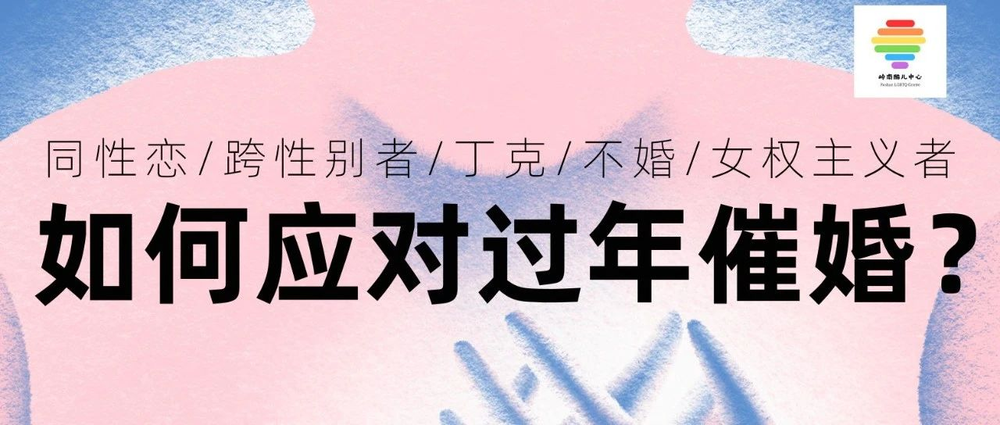

LGBTQ/丁克/不婚族们如何应对过年催婚？
“子女结婚这件事，对于父母来说可能是一个需要完成的任务。父母们认为，上一辈安排好了自己的人生，所以他们也要确保儿女，也过上这种按部就班、不会出错的人生。然后他们才算是完成了为人父母的使命。” ——杂乱无章
春节即将来临，亲朋好友、长辈父母们的“关心”，是否可能让你感到压力？🌈
你是否也担心，催恋/催婚/催育/催生二胎的话题会让你厌倦？🌈
对于性少数群体身份，你是否担心可能在春节期间面对歧视？🌈

春节之际，岭南酷儿中心希望举办一场直播活动，邀请性少数公益人、同性恋者、跨性别者、丁克主义者、不婚主义者、女权主义者等嘉宾，分享自己如何应对催婚/催育/歧视。
如果你是，或你身边有这样的朋友，欢迎你报名成为我们的直播嘉宾，分享你的经历、故事和观点。这是一个难得的机会，让更多人了解和尊重不同的生活方式。

🌈主题🌈
性少数/丁克/不婚如何应对过年催婚催育或歧视？
🌈时间🌈
2024年2月8日(周四)晚上约7:30-9:00
🌈地点🌈
线上直播(具体平台未定)
🌈报名方式🌈
1、“分享嘉宾”请将个人简介(含性与性别身份、年龄、城市)及你希望分享的内容的简洁版发送至我们，添加岭南酷儿中心VX小助手:LGBTQ19900517
2、参与观众请扫描下方二维码参与。

我们将尽快与你联系。❤️🧡💛💚💙💜
本文编辑:颜颜
参考资料:光明日报、南方+